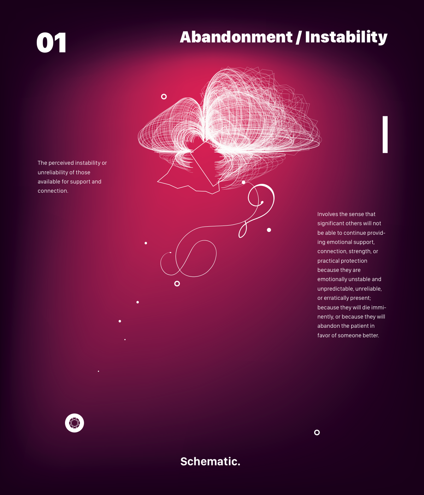
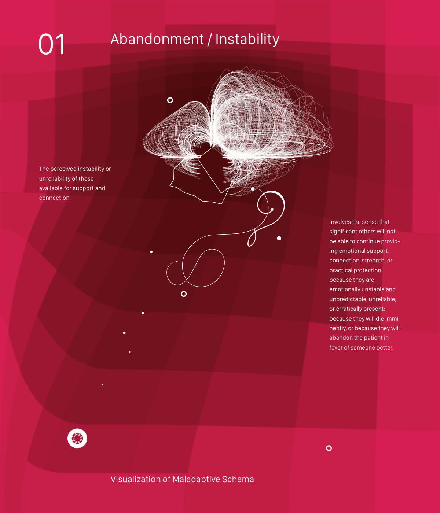
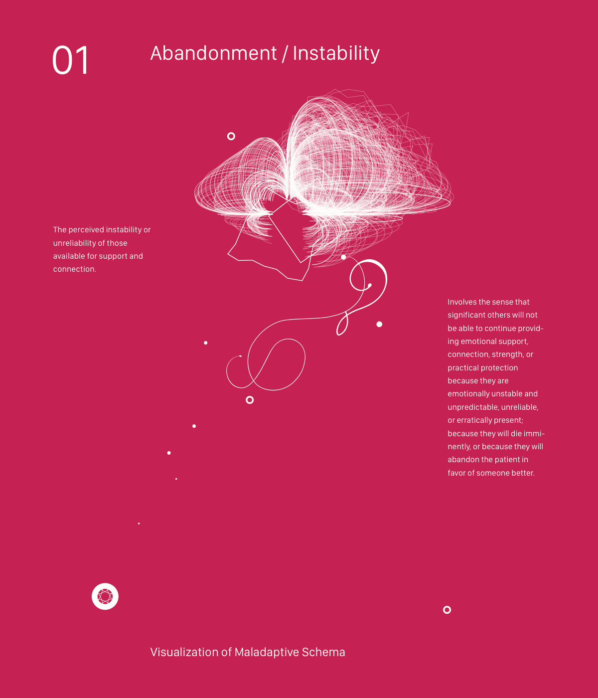
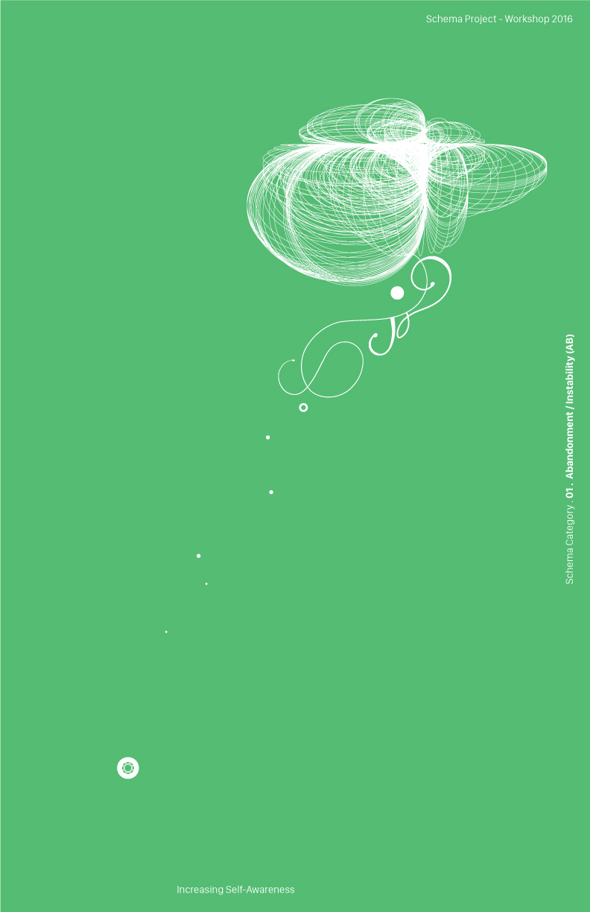
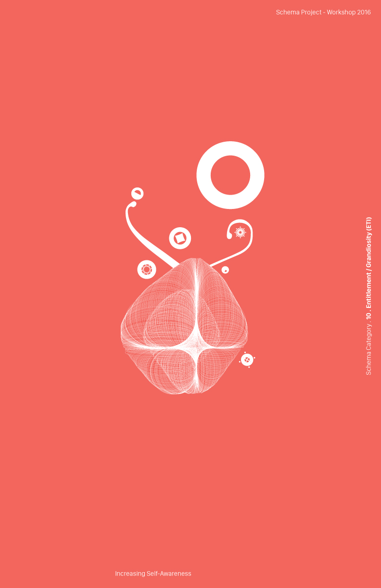
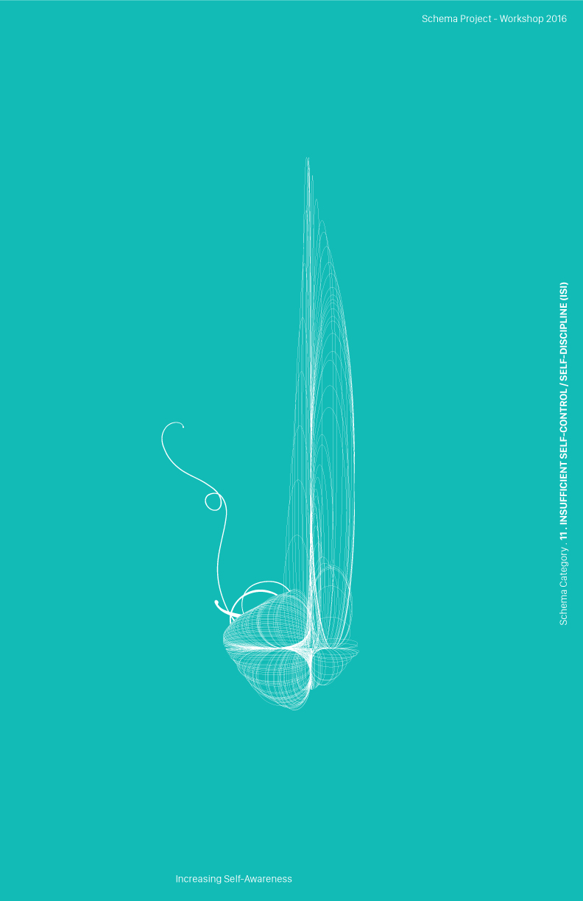
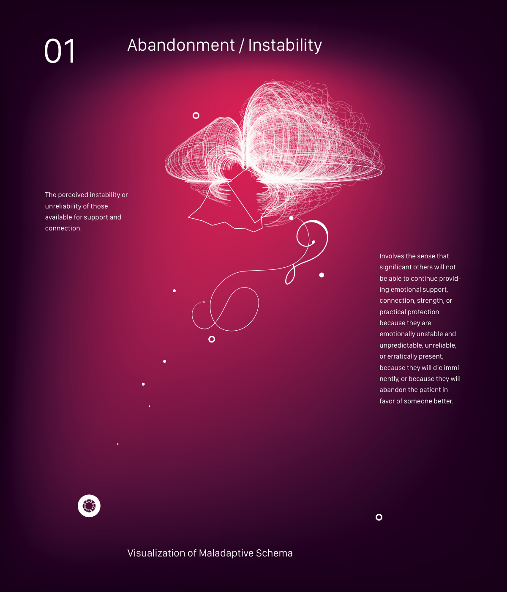

Core Psychological Themes → Schemas
Emotional difficulties arise predominantly from unmet core needs in childhood and adolescent development, which lead to maladaptive schemas and coping styles.
Visualization of Maladaptive Schema
↓Schematic explores how much the knowledge of a single psychological concept — the self-schema — can shape childhood and adolescent development. Because the idea lives in the field of psychology, there are no definite yes-or-no answers. The project does not take a side; it raises awareness of the idea of the self.
The necessity of the work lies in a simple fact: countless people are clueless and confused about the "self." As Psychology Today notes, "self-knowledge is practically impossible to attain… but you can achieve greater objectivity and insight by tuning into a few tested principles." The purpose is to make that architecture visible — and, in doing so, contribute both to the discipline and to anyone exposed to it.
Broadly, this research touches all human beings, but within the span of a workshop it is narrowed to children and millennials. The impact it may bring is abstract rather than tangible — yet it can lead to concrete outcomes depending on one's willingness to reflect and to accept.
"A pattern of thought or behaviour that organizes categories of information and the relationships among them."
"Broad, pervasive themes regarding oneself and one's relationship with others, developed during childhood and elaborated throughout one's lifetime — and dysfunctional to a significant degree."
If an individual was abandoned, abused, neglected, or rejected in childhood, their maladaptive schemas can be triggered by later events they perceive as similar. When a schema fires, it can bring strong negative emotions — grief, shame, fear, or rage. Not every schema is rooted in trauma, but all are destructive, and most are the cumulative product of noxious experiences repeated throughout childhood and adolescence.
Emotional difficulties arise predominantly from unmet core needs in childhood and adolescent development, which lead to maladaptive schemas and coping styles.
Characteristic coping styles — surrender, avoidance, and overcompensation — are the responses a person builds around a schema in order to survive it.
The mind is designed to return a single schema in response to a request — even if several were possible, or even if no single schema satisfied it. What is active at a given moment becomes a "mode."
Generative line-mesh forms and poster studies translate each schema into an image. Click any piece to enlarge.












The research proposal, monograph, timeline, and poster set — as originally submitted. Click to open the PDF.